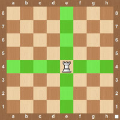

Rook


The rook is the piece that looks like a castle. The is a very strong piece, also referred to as a major piece, and is outranked only by queen. Each side starts with two rooks located in the four corners of the board. Rooks are worth 5 points in chess. While points don’t tell the entire story in a chess game, it does give some indication for how strong a piece is. If you give up a 3 point piece in chess in exchange for your opponents rook, that is generally a good trade for you. The rook can move any number of squares up, down, and across. It can’t jump over material so at the beginning of the game, it also can’t move. At the beginning of the game the rook is surrounded by a pawn and a knight. One mistake that beginners make is they never unleash the rook into the game. The rook rarely gets involved early in the game but you need to find a way later in the game to use the rook or you will have missed out on of your strongest pieces contributing to the game. When a rook moves you will see notation such as Re4. The R represents that a rook is moving and the e4 represents the square the rook is moving to. If the rook is capturing material on the e4 square the notation would be Rxe4. It’s also common to have two rooks that can move to the same square. In that case notation would be Re1e4. That means that the Rook from e1 is moving to e4. This is to limit any confusion about another rook that could also move to e4.
How the Rook Moves
